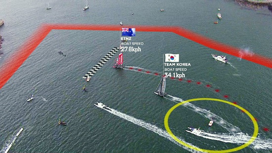
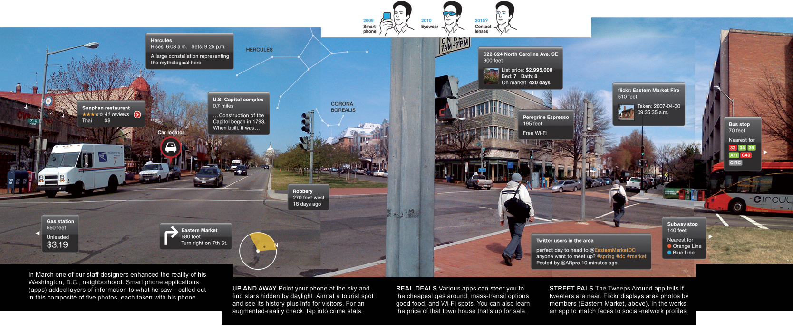
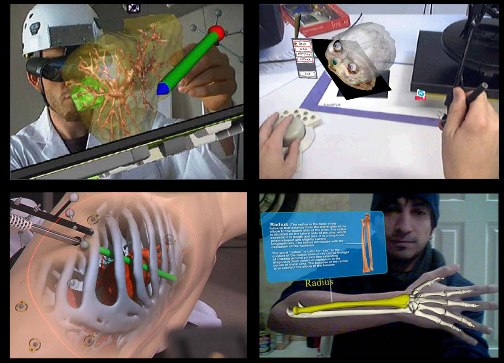
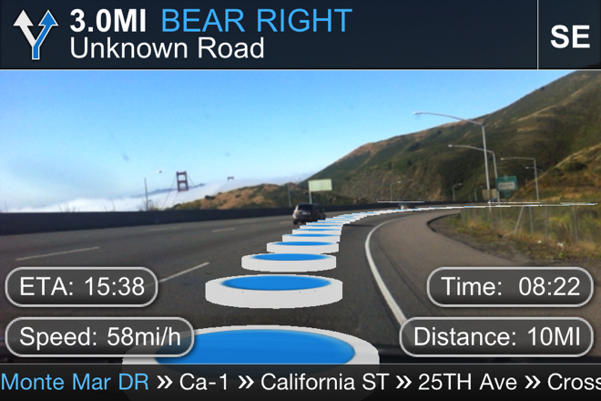
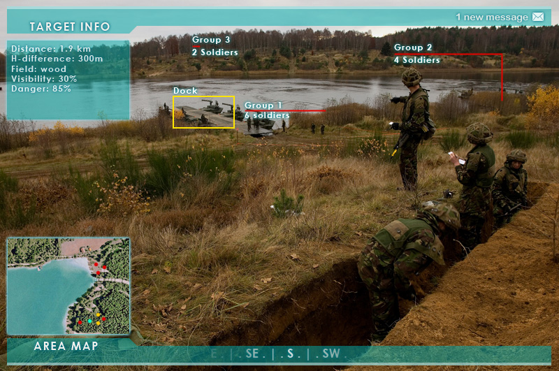
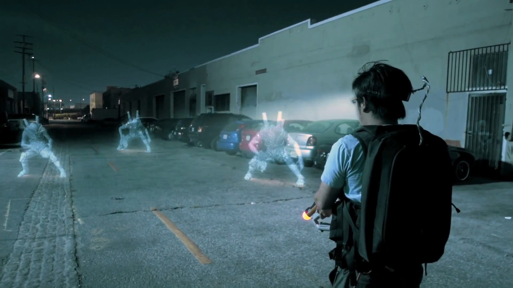
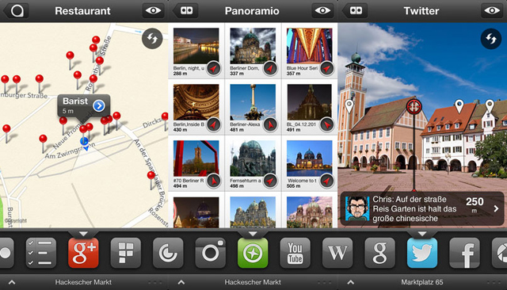
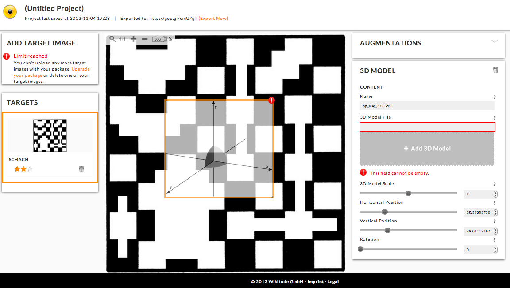
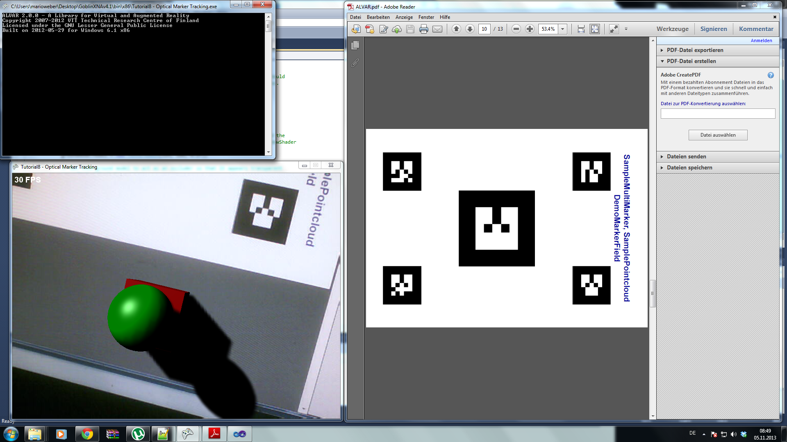

Augmented Reality
CS561 Seminar Verteilte Systeme
Mario Weber, Maurus Dähler, Simon Wang
,
Überblick Vortrag
- Was ist AR?
- Anwendungen
- Webservices
- Do it yourself
- AR - Probleme und Gefahren
Was ist AR?
Anwendungen
- Streetview

- Medizin

- Architektur
- Navigation

- Militär und Katastrophenmanagement

- Games

- Apps

Webservices



DEMO
Do it yourself!

Beispiel Tutorial 8 Goblin XNA
Code Frag1 Initialize
protected override void Initialize()
{
base.Initialize();
// Initialize the GoblinXNA framework
State.InitGoblin(graphics, Content, "");
// Initialize the scene graph
scene = new Scene();
// Use the newton physics engine to perform collision detection
scene.PhysicsEngine = new NewtonPhysics();
SetupMarkerTracking();
// Set up the lights used in the scene
CreateLights();
// Enable shadow mapping
scene.ShadowMap = new MultiLightShadowMap();
// Create 3D objects
CreateObjects();
// Create the ground that represents the physical ground marker array
CreateGround();
// Show Frames-Per-Second on the screen for debugging
State.ShowFPS = true;
}
Code Frag2 SetupMarkerTracker
private void SetupMarkerTracking()
{
IVideoCapture captureDevice = null;
if (useStaticImage)
{
captureDevice = new NullCapture();
captureDevice.InitVideoCapture(0, FrameRate._30Hz, Resolution._800x600,
ImageFormat.R8G8B8_24, false);
((NullCapture)captureDevice).StaticImageFile = "MarkerImage";
}
else
captureDevice = new DirectShowCapture();
captureDevice.InitVideoCapture(0, FrameRate._60Hz, Resolution._640x480,
ImageFormat.R8G8B8_24, false);
}
// Add this video capture device to the scene so that it can be used for
// the marker tracker
scene.AddVideoCaptureDevice(captureDevice);
ALVARMarkerTracker tracker = new ALVARMarkerTracker();
tracker.MaxMarkerError = 0.02f;
tracker.InitTracker(captureDevice.Width, captureDevice.Height, "default_calib.xml", 32.4f);
// Set the marker tracker to use for our scene
scene.MarkerTracker = tracker;
}
Code Frag3 CreateObjects
private void CreateObjects()
{
// Create a geometry node with a model of a box that will be overlaid on
// top of the ground marker array initially. (When the toolbar marker array is
// detected, it will be overlaid on top of the toolbar marker array.)
boxNode = new GeometryNode("Box");
boxNode.Model = new TexturedBox(32.4f);
// Add this box model to the physics engine for collision detection
boxNode.AddToPhysicsEngine = true;
boxNode.Physics.Shape = ShapeType.Box;
// Make this box model cast and receive shadows
boxNode.Model.ShadowAttribute = ShadowAttribute.ReceiveCast;
// Assign a shadow shader for this model that uses the IShadowMap we assigned to the scene
boxNode.Model.Shader = new SimpleShadowShader(scene.ShadowMap);
// Create a marker node to track a toolbar marker array.
toolbarMarkerNode = new MarkerNode(scene.MarkerTracker, "ALVARToolbar.xml");
scene.RootNode.AddChild(toolbarMarkerNode);
// Create a material to apply to the box model
Material boxMaterial = new Material();
boxMaterial.Diffuse = new Vector4(0.5f, 0, 0, 1);
boxMaterial.Specular = Color.White.ToVector4();
boxMaterial.SpecularPower = 10;
boxNode.Material = boxMaterial;
// Add this box model node to the ground marker node
groundMarkerNode.AddChild(boxNode);
}
Code Frag4 Draw
protected override void Draw(GameTime gameTime)
{
// If ground marker array is detected
if (groundMarkerNode.MarkerFound)
{
// If the toolbar marker array is detected, then overlay the box model on top
// of the toolbar marker array; otherwise, overlay the box model on top of
// the ground marker array
if (toolbarMarkerNode.MarkerFound)
{
Vector3 shiftVector = new Vector3(0, 0, 16.1f);
Matrix mat = Matrix.CreateTranslation(shiftVector) *
toolbarMarkerNode.WorldTransformation *
Matrix.Invert(groundMarkerNode.WorldTransformation);
// Modify the transformation in the physics engine
((NewtonPhysics)scene.PhysicsEngine).SetTransform(boxNode.Physics, mat);
}
else
((NewtonPhysics)scene.PhysicsEngine).SetTransform(boxNode.Physics,
Matrix.CreateTranslation(0, 0, 16.1f));
}
scene.Draw(gameTime.ElapsedGameTime, gameTime.IsRunningSlowly);
}